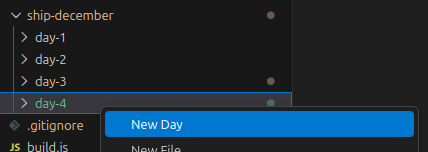
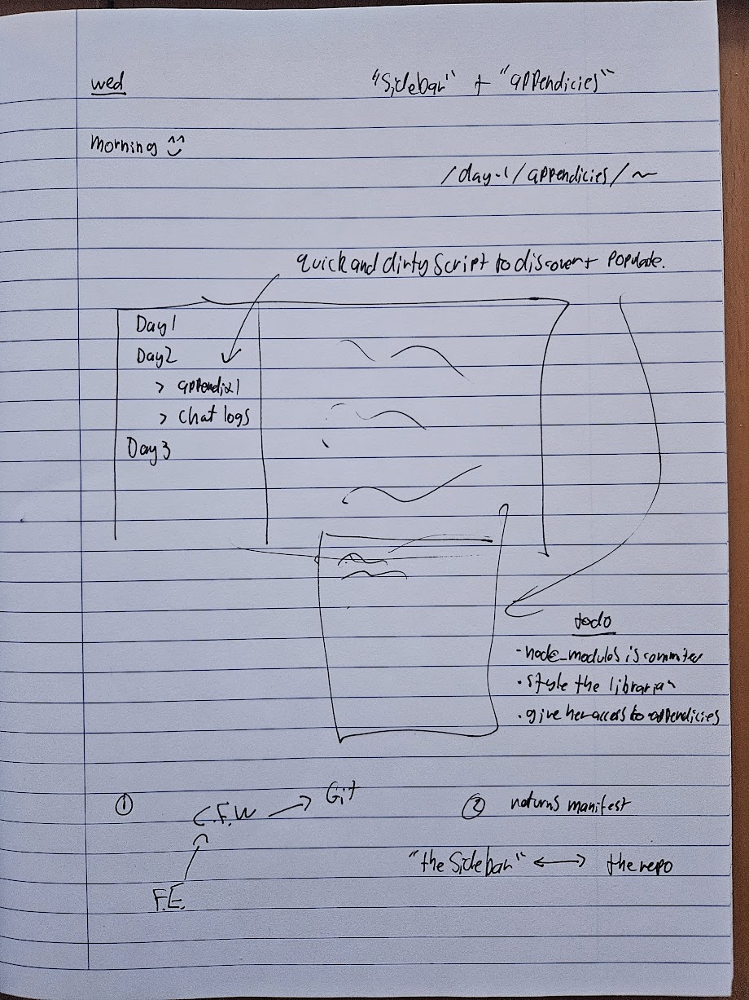
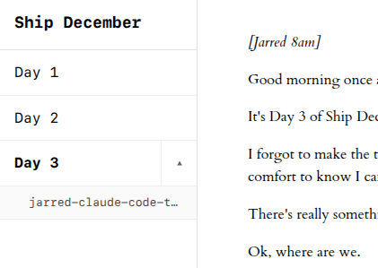
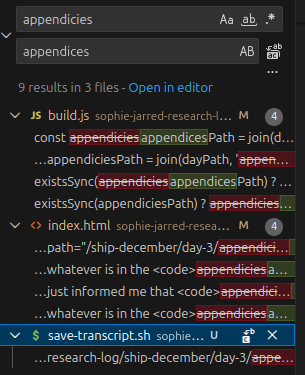
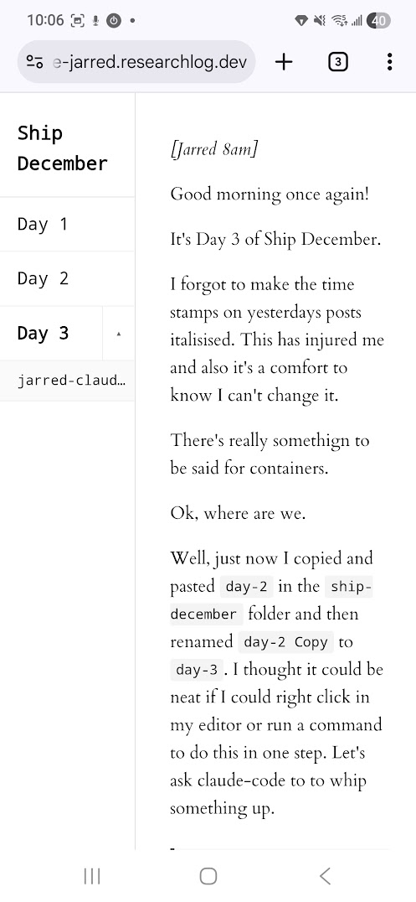
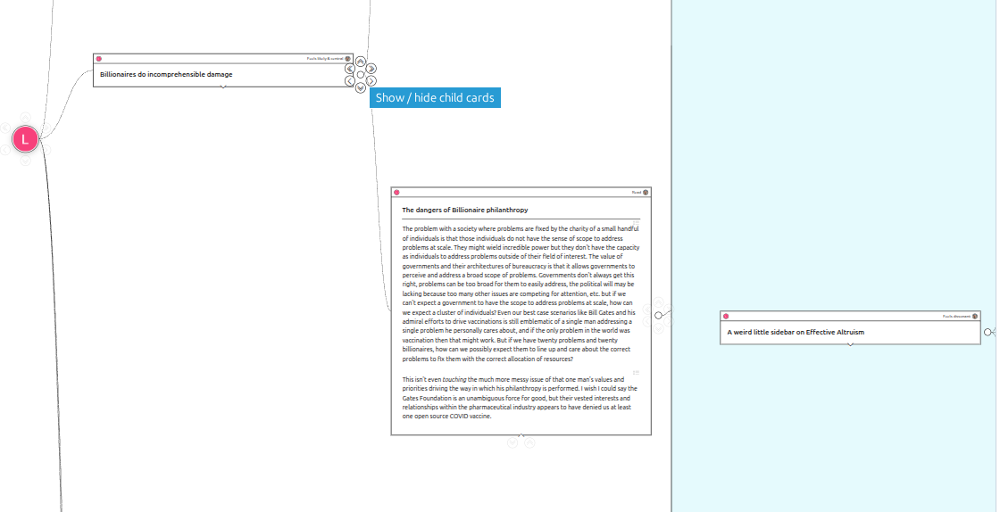
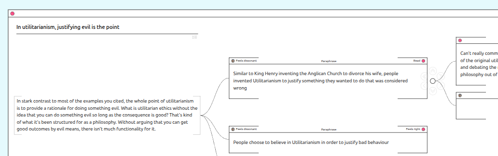
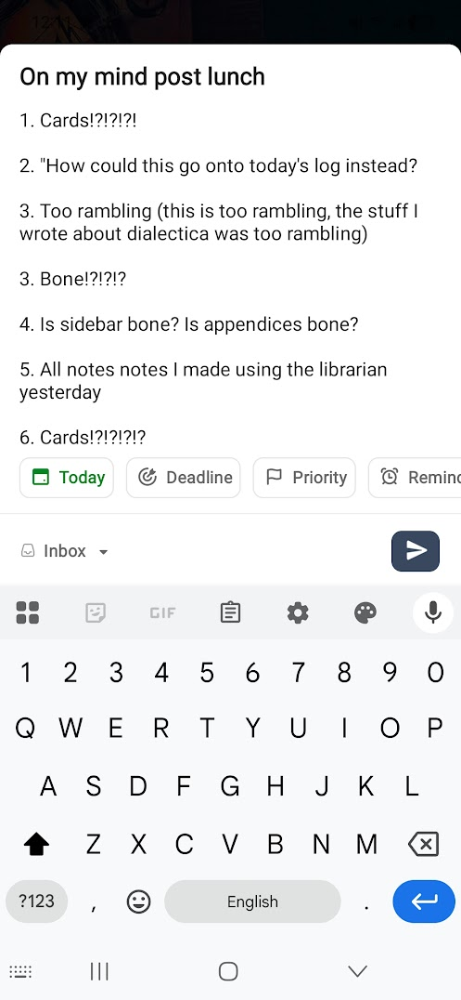

[Jarred 8am]
Good morning once again!
It's Day 3 of Ship December.
I forgot to make the time stamps on yesterdays posts italisised. This has injured me and also it's a comfort to know I can't change it.
There's really something to be said for containers.
Ok, where are we.
Well, just now I copied and pasted day-2 in the ship-december folder and then renamed day-2 Copy to day-3. I thought it could be neat if I could right click in my editor or run a command to do this in one step. Let's ask claude-code to to whip something up.
🤖 can you make a folder in day-3 called "vscode-extension". can you initialise a boiler-plate vscode extension in that folder. call the extension ship-december. have it add a context menu command "new day" which duplicates the most recent folder in "ship-december" (say "day-2" and makes it "day-3").
Yay!

Ok, before then I was doodling in the kitchen with some tea about how I might relieve my shipping anxiety today as soon as possible.

Here's the goal:
- Have a sidebar which can sit to the left of the posts
- The sidebar will display the different days of the research log
- The days can be unfolded to access research material we want to append to the day but not be in the main post (transcripts with various ai for instance)
My current plan to achieve this is to use the git-tree api during our build step.
Should I explain more about our nascent architecture and what's going on with our "build step"?
It would be cool if the librarian (who has access to our code base) could be availed upon to explain to any curious reader.
It would also be cool if we had some kind of comments system so readers could be like "I'm curious about this!"
I think for now let's make a sidebar.
🤖 in the build step (when build.js is run) I want to add a sidebar to the index.html
the sidebar should be on the left, should look nice and minimalist, all black and white (or appropraite shades thereof)
the sidebar should display the posts of the days of ship december "day 1, day 2, etc".
clicking an entry should go to it's url (i.e /ship-december/day-3)
there should be a chevron dropdown to the right which is subtly demarcated.
ok so i'm thinking subtle greay lines to demarcate the days vertically and then also a line to seperate the chevron horizontally from the day title.
clicking the chevron should expand the entry in the sidebar
if there are appendices for that day, then they should appear in a tree when the item is expanded.
days have appendices if there is an "appendices" folder in the day (i.e /ship-december/day-3/appendices). we can discover this just using the file system.
when the appendix items are clicked they should be loaded in the main-content window where the post was.
perhaps there should be an "x" in the upper right?
maybe it should be a modal?
let's make it a black text on white with a simple black border (maybe a subtle drop shadow) pop-up modal for now which will display the appendix item.
[ Jarred 9.30am ]
yay!

Where does that leave us?
Going down a rabbit-hole trying to make the timestamps on my claude-code transcript accurately reflect the time apparently.
Now where does that leave us?
I'm meeting with Sophie in 3 hours. Do I have what I need to say we've shipped?
How will Sophie feel about me having already shipped something when she starts her workday? Will that be de-motivating? I guess we can talk about that this afternoon.
Well, we have a sidebar now, and it displays whatever is in the appendicies folder in the repo.
My spell-checker has just informed me that appendicies is spelt appendices. Hold on.

We have a sidebar now, and it displays whatever is in the appendices folder in the repo. I've set up my claude-code transcript to automatically dump to a file in there for anyone curious and for my own reference. I think in the future we could also hook up any librarian transcripts. Also we could ensure the librarian has access to all appendices.
It sure is easier to build when I don't have to worry about either security or scale.
Can we call that done? Can we send it to all our friends and have it work on their phones?
How does it look on mobile? Good question Jarred.

😬 oh lord, not good at all. The sidebar takes up half the screen on mobile.
🤖 if the screen is less than 800px wide can you bring the sidebar width to 125px and adjust the main content and left margin appropraitely
This is not an ideal level of detail and polish to be getting into when vibe-coding. In my mind all this will have to be re-done anyway... or rather maybe better to say:
- if we're not going to throw this code away then
- it will have to be totally re-done with a human properly in the loop
🤖 can you add this feature to day-3 index.html "you can swipe right anywhere on the sidebar to have it take up the majority of the screen, when tapping the main content it returns to normal"
Many have noticed at this point that vibe-coding can be quite addictive. There's always little adjustments that can be made which pop to mind, and the friction to acting on it has become quite minimal.
🤖 swiping left on the sidebar should also revert it to the original width
Ok
🤖 please make the page not horizontally scrollable
Okokok. Let's ship to production and ensure it works on my actual mobile at the live address rather than just on my PC.
🤖 you also need to add overflow-x: hidden to the html tag not just the body
Arg, stop it

Yay! The sidebar really wants to be thinner... we could take "Ship December" and put it at the top rather than in the sidebar, and maybe make the days just 1, 2, 3 instead.... could also make swiping left on the sidebar again make it even thinner.
Is this fun to read? Is it productive?
Oh yeah, I'm meant to be gnawing a bone. Is this my bone?
Sophie and I had a meeting the other day with an advanced UX researcher named Peter.
He said people under-invest in "polish" by a factor of at-least 10. Directionally / vibe-wise I tend to agree. Can I articulate why? I felt this way with Dialectica...
For what we want to build to work it needs to feel like a miracle. (Justification needed)
For tools to feel like a miracle...
gah
Ok so tools resolve tensions.
For a tool to really work it needs to add less tension than it resolves. Ideally it adds no tension at all.
Projects like Dialectica and Ship December are about trying a bunch of obvious things and discovering that most of th
gah
I often "feel" tools which seem obviously quite useful but that don't yet exist.
One way of thinking about projects like Dialectica or Ship December is setting aside a quality block of time to actually pursue the obvious.
This is Dialectica by the way:

It's basically a system for pinning virtual nested index cards to a big shared virtual pin-board. I made it to enable autistically unusually in-depth conversations and I did it by evolving the design to follow my sense of the blaring obvious.
Let me explain a bit about what Dialectica is.
The above image might be a bit hard to make out, but it's a series of (basically) letters that my friend Liam wrote to me on digital index cards. They all have titles, and I've expanded the middle one so you can see the text content. The titles are:
"Billionaires do incomprehensible damage" > "The Dangers of Billionaire Philanthropy" > "A weird little sidebar on Effective Altruism"
If I clicked that little "<<" icon you might be able to make out, all the cards to the right of the first one would fold up "under it". The cards actually continue to the right for another 8 levels of nesting. The deepest one is "Honestly I think you and Marx would really vibe on the subject of ownership" (bold claim).
Anyway, this is the screenshot I wanted to talk about.

Deep into our long digression on Effective Altruism Liam make a card entitled "In utilitarianism, justifying evil is the point".
I'm pretty sure it was at this point where I was like:
"Obviously I need to be able to split each paragraph into separate sentences to make it easier to read them slowly one at a time"
"Obviously I need to be able to at a point-by-point level create paraphrases and then have my friend be able to mark them as resonant or dissonant"
etc
Where was I going with this?
I guess my point is that the obvious has a surprising amount of detail.
Obviously there should be a sidebar with the days on it where I can access supplementary research content, but how to deal with the width issues?
Obviously readers should be able to leave google-doc style voice and text comments that the AI can read... actually the voice comment one especially sounds pretty cool. I might do that this afternoon.
Anyway, I guess there's some process of exploration around this. That is, how much polish is required to properly test the intuition that "there's something obvious that wants to exist in that direction."
The AI librarian from yesterday is a good example. There's an intuition around "easy access to a voice enabled system which can access and read back to me things I've written or notes to self". In order to actually test this though:
Potentially the value only really shines one it's available as a mobile app rather than a webpage (or maybe an always listening device like a google home?)
Potentially it needs to be very reliably available for the fluency to start to develop
At the moment the AI assistant isn't super interruptible, so if I get bored of what I'm listening to it's hard to stop this.
list goes on
The point of a research project is to rapidly prototype seemingly obvious things to build, and the seemingly obvious has a surprising amount of detail.
I have no satisfying resolution to this tension at the moment other than intuition and not working alone I think.
[ Jarred 11.15am ]
Ok, I fear this post has gotten a bit out of hand but I've alleviated my shipping anxiety for today. We have a side bar and you can access my claude-code transcript from it, even if it does make the post annoying to read.
[ Jarred 12.30am ]

⏭️ next